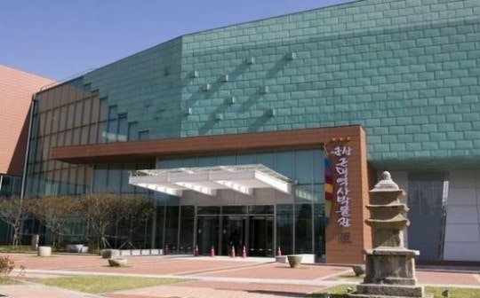
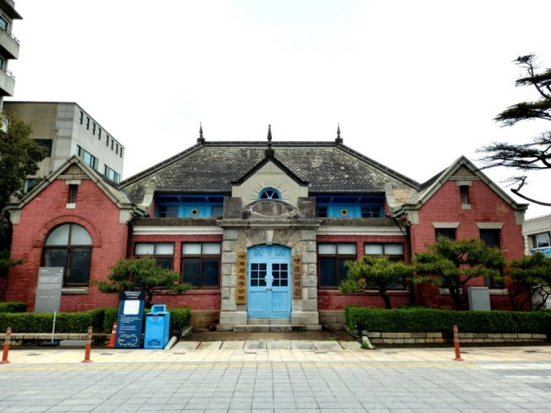
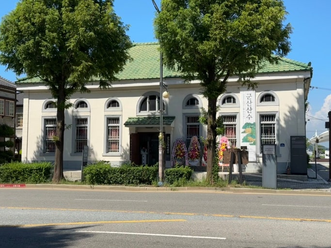
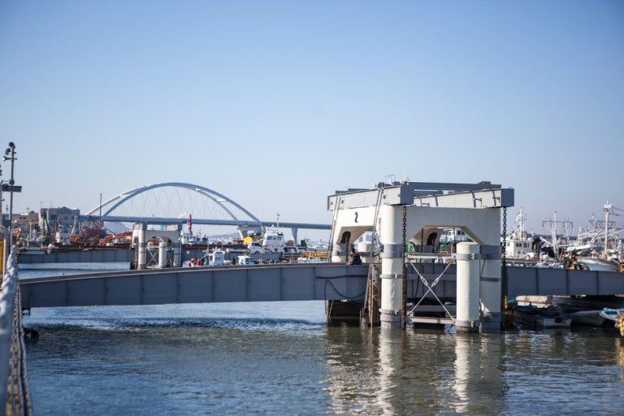
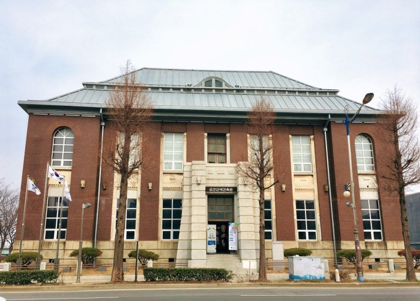
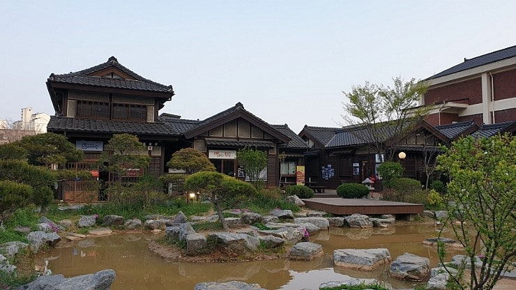
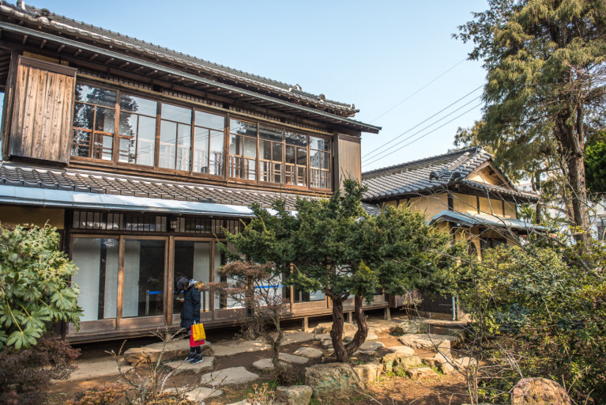
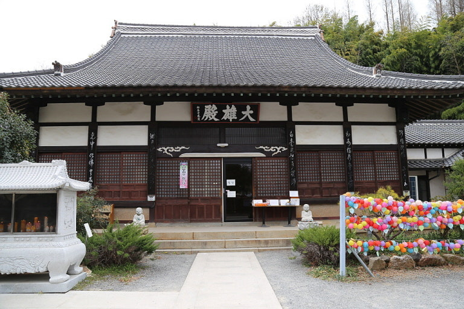
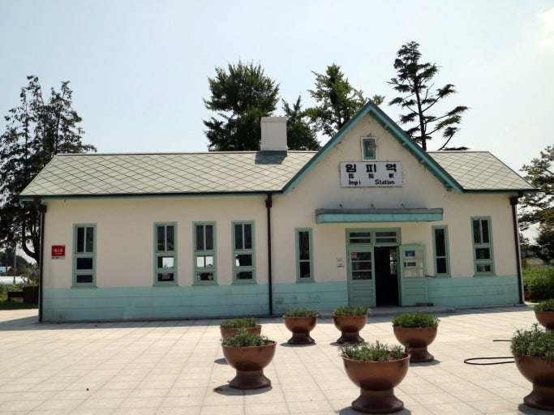

근대역사박물관
군산의 근현대사를 만나는 공간

호남관세박물관
서양 고전주의 3대 건축물 중의 하나

근대미술관
구, 이본 18은행 군산지점

뜬다리부두
수탈물을 일본으로 나르기 위한 다리

근대건축관
구, 조선은행 군산지점

여미랑
일본식 가옥을 복원하여 게스트하우스로 운영중인 시대형 숙박체험관

일본식가옥
일제강점기 일본인 지주의 생활상과 이들의 농촌수탈의 역사를 알 수 있는 곳

동국사
우리나라에 남아있는 유일한 일본식 사찰
해망굴
일제강점기 해망동과 군산시내를 연결하기 위해 해말궁을 관통하는 터널로 1926년 완공한 토목시설물
이영춘가옥
독특한 건축양식의 가옥

임피역사
건축적, 철도사적 가치가 높은 건물